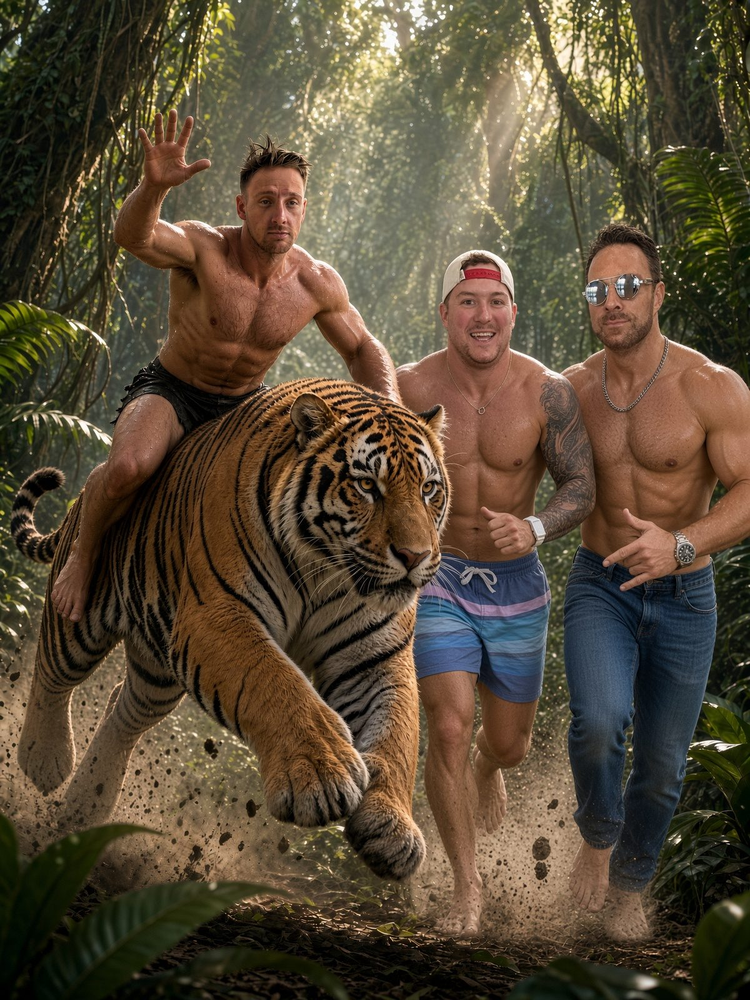

Happy Birthday, Anthony! The League Leader Turns a Year Older (and the Whole League Is Lining Up)

Happy Birthday, Anthony!
Put down the waiver wire and pick up a fork. Today, Sunday, October 11, is Anthony's birthday, the manager of Drake & Bake(r) and, for the moment, the best team in the Tacos Tolteca DGFFL.
So today we celebrate. And since this is the DGFFL, we celebrate the only way we know how: a cake, a roast and a birthday tradition that the other 11 managers have been looking forward to all week.
The Birthday Tradition
League rules are league rules: the birthday boy gets birthday backshots from the entire league. One from each of the other 11 managers. It's tradition. Nobody wrote it down, but everybody agreed to it.
The line forms behind the commish. ABMCommissioner is out of FAB and has nothing else to give, so he's going first.
The Birthday Roast
Let's start with the name. Drake & Bake(r). As in Drake London and Baker Mayfield. Love the commitment, but check the roster, Anthony: Baker Mayfield is on IR. Half the team name is in the trainer's room. Right now you're just "Drake &." Keep naming your team after guys who can't stay healthy and see how far it gets you.
Next, the 2QB room, where your starters are Jordan Love and Jacoby Brissett. In a 6-point passing TD league, the guy leading the standings is starting Jacoby Brissett. That's a gutsy call, a tough watch, or both.
Then there's the wire. On Sep 30 you dropped Jayden Reed to waivers and added nobody. The same day you picked up Alvin Kamara for free. Today Kamara is sitting on your bench. You went shopping, came home and left the groceries in the car.
And let's not forget Week 1: Drake & Bake(r) scored 139.02 and lost by 7.88 to Taylor's world. The best team in the league opened 0-1. Someone had to give you a birthday humbling early.
Finally, the live one: as of Saturday night, Bands Emeka Dance leads you 31.50 to 0.00 in Week 5. Daniel got you a birthday present, and it's a head start.
And yes, Anthony, the line is still forming. Eleven managers, waiting their turn. Happy birthday.
But Seriously: The Birthday Boy Is the Best Team in the League
Now for the honest part. Anthony is #1 in our Week 5 Power Rankings, and it isn't close.
- 3-1, 2nd in the standings, on a three-game win streak (W-3).
- 638.74 PF, the most in the league, 40.60 ahead of GettinGoff on CTay (598.14) in second.
- Three straight weeks over 150: 153.58, 183.52, 162.62, for a 173.07 average over his last two games, the best form in the league.
- Week 3's 183.52 is the second-highest score of the season, behind only GettinGoff on CTay's 200.70.
- His Week 5 projection of 159.04 is the highest in the league.
- He's managed all of that with $61 of FAB still in the bank.
That's a balanced roster: Jonathan Taylor and Kyren Williams in the backfield, Jaxon Smith-Njigba and Drake London at WR, Tucker Kraft at TE, Michael Wilson at flex, and a bench deep enough to start in other leagues.
Outlook: this is a real contender. The best scoring offense in the league, the hottest team over the last two weeks and plenty of FAB left for the stretch run. Birthday at the top of the power rankings, and a real shot to be celebrating again in January.
Happy birthday, Anthony. Enjoy the cake, enjoy the win streak, and brace yourself. The whole league is coming to celebrate. 🎂🌮